감정평가사-1차-1교시(구) (2012-07-01 기출문제)
1과목: 민법(총칙,물권)
1. 물건에 관한 설명으로 옳은 것은? (다툼이 있으면 판례에 의함)
- 완공된 신축 건물이라도 보존등기 전에는 소유권이 인정되지 않는다.
- 1필의 토지 일부에는 지상권을 설정할 수 없다.
- 등기된 입목의 소유자는 입목을 토지와 분리하여 양도할 수 있고 이를 저당권의 목적으로 할 수 있다.
- 권한 없이 타인의 토지에 농작물을 심은 경우, 수확기에 이른 농작물의 소유권은 토지 소유자에게 귀속된다.
- 주유소의 주유기는 주유소 건물에 부합되어 종물로 볼 수 없다.
(정답률: 알수없음)

2. 기간의 계산에 관한 설명으로 옳지 않은 것은? (다툼이 있으면 판례에 의함)
- 사원총회를 1주일 전에 통지하여야 하는 경우, 5월 25일 총회 예정일을 기준으로 늦어도 5월 17일 24시까지는 사원들에게 소집통지를 발송하여야 한다.
- 정년이 만 60세인 경우, 1952년 7월 8일 오후 3시에 출생한 직원은 2012년 7월 8일 오전 0시에 정년을 맞이한다.
- 1981년 5월 20일 오전 11시에 출생한 자는 2001년 5월 21일 오전 0시에 성년으로 된다.
- 기간의 말일이 2012년 3월 10일 토요일인 경우에 는 2012년 3월 12일 월요일로 만료된다.
- 다가오는 2012년 7월 7일부터 1주일까지라고 하면, 2012년 7월 13일 24시에 만료된다.
(정답률: 알수없음)
3. 조건과 기한에 관한 설명으로 옳지 않은 것은? (다툼이 있으면 판례에 의함)
- 기성조건이 정지조건이면 조건 없는 법률행위가 되고, 해제조건이면 그 법률행위는 무효이다.
- 조건의 성취로 인하여 불이익을 받을 당사자가 신의성실에 반하여 조건의 성취를 방해한 경우, 조건이 성취된 것으로 의제되는 시점은 방해행위 시점이다.
- 기한이익의 상실약정이 있는 경우, 특별한 사정이 없는 한 채권자가 통지나 청구 등을 하여야만 채무자의 기한이익이 상실된다.
- 부첩관계 종료를 해제조건으로 하여 부동산을 증여한 경우, 증여계약은 무효이다.
- 조건성취의 효력은 조건이 성취한 때로부터 생기고 소급하지 않는 것이 원칙이다.
(정답률: 알수없음)
4. 소멸시효와 제척기간에 관한 설명으로 옳지 않은 것은? (다툼이 있으면 판례에 의함)
- 명의신탁 해지를 원인으로 하는 소유권에 기한 이전등기청구권은 소멸시효의 대상이 되지 않는다.
- 점유자가 점유를 계속하는 동안에는 취득시효완성을 원인으로 한 소유권이전등기청구권은 소멸시효가 진행되지 않는다.
- 공유물분할청구권은 공유관계가 존속하는 한 그 분할청구권만이 독립하여 시효로 소멸될 수 없다.
- 제척기간을 정한 형성권의 경우, 그 행사로 인하여 발생하는 채권도 형성권의 제척기간 내에 행사하여야 한다.
- 소멸시효의 중단에 관한 규정은 취득시효에 의한 소유권취득기간에 준용한다.
(정답률: 알수없음)
5. 소멸시효 기간의 기산점에 관한 내용으로 옳지 않은 것은? (다툼이 있으면 판례에 의함)
- 동시이행의 항변권이 붙어 있는 채권은 이행기가 도래한 때부터 소멸시효가 진행한다.
- 부작위를 목적으로 하는 채권은 위반행위를 한 때로부터 소멸시효가 진행한다.
- 불확정기한부 채권은 채무자가 그 기한의 도래를 안 때부터 소멸시효가 진행한다.
- 기한을 정하고 있지 않은 채권은 그 채권이 발생한 때부터 소멸시효가 진행한다.
- 이행불능으로 인한 전보배상청구권의 소멸시효는 이행불능시부터 진행된다.
(정답률: 알수없음)
6. 무효와 취소에 관한 설명으로 옳지 않은 것은? (다툼이 있으면 판례에 의함)
- 의사무능력으로 인한 무효행위의 추인은 그 무효원인이 소멸한 후에 하여야 효력이 있다.
- 취소권 행사기간은 제척기간이므로 당사자의 주장에 관계없이 법원이 당연히 조사하여 고려하여야 한다.
- 미성년자는 성년자가 된 후에야 단독으로 추인할 수 있다.
- 하나의 계약이라 할지라도 가분성을 가지거나 그 목적물의 일부가 특정될 수 있다면 그 일부만의 취소도 가능하다.
- 무효인 법률행위는 추인에 의해 소급하여 유효한 법률행위로 전환된다.
(정답률: 알수없음)
7. 부동산 취득시효에 관한 설명으로 옳지 않은 것은? (다툼이 있으면 판례에 의함)
- 중복등기 중 선등기가 원인무효가 아니어서 후등기가 무효로 된 경우, 말소되지 않은 후등기를 근거로 등기부취득시효의 완성을 주장할 수 없다.
- 시효기간 만료 전에 제3자가 등기명의를 넘겨받은 경우, 점유자는 시효기간완성 후에 그 제3자를 상대로 취득시효를 원인으로 소유권이전등기를 청구할 수 있다.
- 점유자가 취득시효를 주장하는 경우, 자주점유 여부에 관한 증명책임은 취득시효의 성립을 부정하는 자에게 있다.
- 자기 소유의 부동산은 취득시효의 대상이 될 수 없다.
- 점유자가 점유 개시 당시에 소유권 취득의 원인이 될 수 있는 법률행위가 없다는 사실을 알면서 타인 소유의 부동산을 무단점유한 경우, 취득시효는 인정되지 않는다.
(정답률: 알수없음)
8. 전세권에 관한 설명으로 옳은 것은? (다툼이 있으면 판례에 의함)
- 전전세권의 설정에는 원전세권자와 전전세권자 사이의 전전세권 설정의 합의 및 등기와 원전세권설정자의 동의를 요한다.
- 구분등기 되지 않은 건물 일부의 전세권자는 전세권의 목적물이 아닌 나머지 건물부분에 대해서는 전세권에 기하여 경매신청을 할 수 없으나 우선변제권은 가진다.
- 전세권이 법정 갱신된 경우 갱신에 따른 등기를 하지 않으면, 전세권자는 그 목적물을 취득한 제3자에 대하여 갱신된 권리를 주장하지 못한다.
- 전세금을 현실적으로 지급하지 아니하고 기존의 채권으로 갈음하기로 한 경우에는 전세권이 성립될 수 없다.
- 전세권 존속기간이 만료된 경우 전세권의 용익물권적 권능은 소멸되고 전세금반환채권은 무담보채권으로 전환된다.
(정답률: 알수없음)
9. X 부동산을 甲으로부터 매수한 乙은 이전등기를 경료하지 않은 채 丙에게 그 부동산을 매도하였고 현재 丙은 이를 점유하여 사용ㆍ수익하고 있다. 다음 설명 중 옳지 않은 것은? (다툼이 있으면 판례에 의함)
- 3자간 중간생략등기의 합의가 있더라도 甲과 丙 사이에 토지거래허가를 받아 甲에서 丙 앞으로 직접 경료된 소유권이전등기는 무효이다.
- 甲과 丙 사이에 물권적 합의가 없더라도 중간생략등기에 관한 3자 합의가 있다면, 丙은 甲에 대하여 직접 자신의 명의로 이전등기를 청구할 수 있다.
- 중간생략등기의 합의가 있은 후 甲과 乙 사이에 매매대금을 인상하는 약정이 체결된 경우, 인상된 매매대금이 지급되지 않았음을 이유로 甲은 丙에 대한 소유권이전등기의무의 이행을 거절할 수 없다.
- 이미 甲에서 丙으로 소유권이전등기가 경료된 경우, 중간생략등기에 관한 합의가 없었다는 이유만으로는 중간생략등기가 무효라고 할 수 없다.
- 乙의 甲에 대한 이전등기청구권은 중간생략등기의 합의가 있는 경우에도 소멸되지 않는다.
(정답률: 알수없음)
10. 혼동에 관한 설명으로 옳지 않은 것은? (다툼이 있으면 판례에 의함)
- 乙 소유의 토지에 지상권을 취득한 甲이 그 지상권을 목적으로 하는 저당권을 丙에게 설정한 후 甲이 토지의 소유권을 취득하였다면, 甲의 지상권은 소멸하지 않는다.
- 乙 소유의 토지에 지상권을 취득한 甲이 그 지상권을 목적으로 하는 저당권을 丙에게 설정한 후에 甲이 그 저당권을 취득한다면, 그 저당권은 소멸한다.
- 甲 소유의 건물에 乙의 대항력 있는 임차권이 성립한 후 丙이 그 건물에 저당권을 취득하였다면, 후일 乙이 甲으로부터 그 건물을 매수하여도 임차권은 소멸하지 않는다.
- 丙 소유의 토지에 甲의 1순위저당권과 乙의 2순위 저당권이 설정되어 있을 때, 甲이 그 토지를 매수하여 소유권을 취득하였고 甲의 피담보채권이 존속할 경우에는 乙의 저당권이 1순위가 된다.
- 근저당권자 甲이 근저당목적물인 건물을 매수한 후 그 소유권취득이 무효로 밝혀지면, 혼동으로 소멸하였던 근저당권은 부활한다.
(정답률: 알수없음)
11. 유치권에 관한 설명으로 옳지 않은 것은? (다툼이 있으면 판례에 의함)
- 유치권자는 피담보채권 전부의 변제를 받을 때까지 경매절차의 매수인에 대하여도 목적물의 인도를 거절할 수 있다.
- 유치권자의 점유는 직접점유이든 간접점유이든 관계가 없으나, 그 직접점유자가 채무자인 경우에는 유치권의 요건으로서의 점유에 해당되지 않는다.
- 유치권을 행사하고 있는 동안에는 피담보채권의 소멸시효는 진행하지 않는다.
- 건물의 임차인은 임대차 존속기간 중 지출한 유익비의 상환을 받을 때까지 유치권을 행사할 수 있다.
- 건축업자가 건물을 점유하기 전에 건물공사로 취득한 건축비채권이라도 그 후 그 건물을 점유하였다면 유치권은 성립한다.
(정답률: 알수없음)
12. 신의성실의 원칙과 권리남용 금지원칙에 관한 설명으로 옳지 않은 것은? (다툼이 있으면 판례에 의함)
- 강행법규 위반임을 알면서 계약을 체결한 후 이를 이유로 계약의 무효를 주장하는 것은 특별한 사정이 없는 한 신의칙에 반한다.
- 실효의 원칙을 적용하기 위해서는 의무자인 상대방이 더 이상 권리자가 그 권리를 행사하지 아니할 것으로 믿을 만한 정당한 사유가 있어야 한다.
- 채무자가 채권자의 시효중단을 현저히 곤란하게 하여 채권자가 시효중단을 주장할 수 없는 경우, 채무자가 시효의 완성을 주장하는 것은 신의칙상 허용되지 않는다.
- 법정지상권을 가진 건물소유자로부터 건물을 양수하면서 법정지상권까지 양도받기로 한 자에 대하여 대지소유자가 그 소유권에 기하여 건물철거를 청구하는 것은 허용되지 않는다.
- 권리남용의 해당 여부는 당사자의 주장이 없더라도 법원이 직권으로 판단할 수 있다.
(정답률: 알수없음)
13. 만 15세의 미성년자 甲은 친권자 丙의 동의를 얻어 자신의 소유인 X 토지를 乙에게 매도하는 경우, 다음 설명 중 옳은 것을 모두 고른 것은? (다툼이 있으면 판례에 의함)
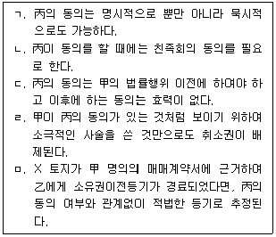
- ㄱ, ㄹ
- ㄱ, ㅁ
- ㄴ, ㄷ
- ㄴ, ㄹ
- ㄷ, ㅁ
(정답률: 알수없음)
14. 상대방 없는 단독행위인 것은?
- 소유권의 포기
- 해제
- 동의
- 추인
- 채무면제
(정답률: 알수없음)
15. 甲은 乙에게 500만 원을 빌리면서 800만 원 상당의 명품시계에 질권을 설정하였다. 그 후 乙은 丙으로부터 300만 원을 빌리면서 甲의 시계에 관하여 丙에게 다시 질권을 설정하여 주고 그 사실을 甲에게 통지하였다. 다음 설명 중 甲이 질권의 소멸을 주장하여 시계를 돌려받을 수 있는 경우는?
- 甲이 乙에게 500만 원을 변제한 경우
- 甲이 丙에게 300만 원을 변제한 경우
- 甲이 丙에게 200만 원을 변제한 경우
- 甲이 丙에게 300만 원을 변제하고 乙에게 200만원을 변제한 경우
- 甲이 丙에게 200만 원을 변제하고 乙에게 300만원을 변제한 경우
(정답률: 알수없음)
16. 통정허위표시에 있어 선의의 제3자가 될 수 없는 자는? (다툼이 있으면 판례에 의함)(문제 오류로 가답안 발표시 1번으로 발표되었지만 확정답안 발표시 모두 정답처리 되었습니다. 여기서는 가답안인 1번을 누르면 정답 처리 됩니다.)
- 가장채권 양수인의 포괄승계인
- 가장행위에 기한 저당권부 채권을 가압류한 자
- 가장양수인으로부터 매매계약에 의한 소유권이전등기청구권 보전을 위한 가등기를 경료받은 자
- 가장저당권의 실행으로 경락받은 자
- 가장양수인으로부터 목적부동산을 전득한 자
(정답률: 알수없음)
17. 의사표시의 효력발생시기에 관한 설명으로 옳지 않은 것은? (다툼이 있으면 판례에 의함)
- 무권대리인의 상대방이 상당한 기간을 정하여 본인에게 추인 여부를 최고한 경우, 본인이 그 기간 내에 확답을 발하지 않으면 추인을 거절한 것으로 본다.
- 공시송달을 함에 있어서 표의자는 상대방을 알지 못하거나 그 소재를 알지 못하는 데 과실이 없어야 한다.
- 미성년자에 대한 의사표시의 도달을 법정대리인이 안 후에는 표의자가 의사표시의 도달을 주장할 수 있다.
- 보통우편의 방법으로 의사표시가 발송된 경우에는 그 의사표시가 상당한 기간 내에 도달한 것으로 추정된다.
- 승낙의 의사표시를 발송한 후 승낙자가 사망하더라도 승낙의 효력에는 영향을 미치지 않는다.
(정답률: 알수없음)
18. 불공정한 법률행위에 관한 설명으로 옳은 것은? (다툼이 있으면 판례에 의함)
- 매도인이 불공정한 법률행위를 이유로 계약의 무효를 주장하는 경우, 매도인은 매매가격의 현저한 불균형을 증명하면 족하고, 매도인의 경솔 등의 여부는 매수인이 증명하여야 한다.
- 불공정한 법률행위가 대리인에 의하여 이루어진 경우, 궁박ㆍ경솔은 본인을 기준으로 하고 무경험은 대리인을 기준으로 판단한다.
- 불공정한 법률행위가 성립하기 위해서는 폭리자에 게 피해 당사자의 궁박ㆍ경솔 또는 무경험에 대한 인식과 이를 이용하려는 의사가 있어야 한다.
- 불공정한 법률행위로서 무효인 경우에도 당사자가 그 무효임을 알고 추인한 때에는 새로운 법률행위로 본다.
- 불공정한 법률행위에 있어서 급부와 반대급부 사이의 현저한 불균형이 있으면 이는 당사자의 궁박ㆍ경솔 또는 무경험에 의한 것으로 추정된다.
(정답률: 알수없음)
19. 甲은 乙을 강박하여 乙 소유의 X 토지를 무상으로 자신에게 증여하도록 강요하였다. 이에 乙은 자신의 재산을 甲에게 강제로 빼앗긴다는 인식을 하였지만 그래도 어쩔 수 없다고 생각하면서 X토지를 무상으로 증여하였다. 다음 설명 중 옳은 것은? (다툼이 있으면 판례에 의함)
- 乙의 증여의 의사표시는 비진의 의사표시에 해당한다.
- 甲의 불법적인 해악의 고지로 말미암아 乙이 공포심을 느꼈다면 그것이 乙의 의사결정에 큰 영향을 주지 않았더라도 乙의 증여행위는 무효가 된다.
- 불공정한 법률행위를 이유로 乙의 증여행위를 무효로 할 수 없다.
- 乙은 강박에 의한 의사표시를 이유로 증여행위를 취소할 수 없다.
- 乙의 증여의 의사표시는 통정허위표시에 해당하여 무효이다.
(정답률: 알수없음)
20. 법률행위에 관한 설명으로 옳지 않은 것은? (다툼이 있으면 판례에 의함)
- 착오에 의한 의사표시의 취소권은 형성권이다.
- 복대리에 대해서는 표현대리가 성립되지 않는다.
- 대리인을 통한 계약체결시 의사표시의 하자 여부는 대리인을 표준으로 결정한다.
- 대리인이 다수인 때에는 특별한 사정이 없는 한 각자가 본인을 대리한다.
- 취소권자가 상대방으로부터 담보를 제공받은 경우 법정추인이 된다.
(정답률: 알수없음)
21. 착오에 관한 설명으로 옳지 않은 것은? (다툼이 있으면 판례에 의함)
- 동기의 착오를 이유로 계약을 취소하기 위해서는 그 동기가 상대방에게 표시되고 의사표시 내용의 중요부분으로 인정될 수 있어야 한다.
- 특별한 사정이 없는 한 매매목적물의 시가는 의사표시 내용의 중요부분에 해당하므로 시가에 대한 착오를 이유로 매매계약을 취소할 수 있다.
- 착오를 이유로 계약이 취소됨으로써 상대방이 손해를 입었더라도 상대방은 착오자에 대하여 불법행위를 원인으로 그 배상을 청구할 수는 없다.
- 착오가 상대방의 기망에 의하여 유발된 경우에는 사기를 이유로 계약을 취소할 수 있다.
- 상대방에 의하여 유발된 동기의 착오가 법률행위의 중요부분에 해당하는 경우에는 계약을 취소할 수 있다.
(정답률: 알수없음)
22. 법률행위의 해석에 관한 설명으로 옳지 않은 것은? (다툼이 있으면 판례에 의함)
- 계약의 해석은 당사자가 그 표시행위에 부여한 객관적 의미를 명백하게 확정하는 것이다.
- 계약의 당사자가 누구인지는 그 계약에 관여한 당사자의 의사해석의 문제이다.
- 진의 아닌 의사표시에 있어서 진의는 표의자가 진정으로 마음 속에서 바라는 사항을 의미한다.
- 계약의 해석을 통하여 보충되는 당사자의 의사는 당사자의 주관적 의사가 아니라 거래관행이나 신의칙 등에 의하여 객관적으로 추인되는 의사를 의미한다.
- 타인 명의로 계약을 체결하는 경우 계약을 체결한 자와 상대방의 의사가 일치한다면 그 일치된 의사대로 당사자를 확정하면 된다.
(정답률: 알수없음)
23. 乙은 대리권이 없음에도 불구하고 甲의 대리인이라고 하면서 甲 소유의 X 토지를 丙에게 매도하는 계약을 체결하였다. 다음 설명 중 옳은 것은?
- 甲이 乙에 대하여 추인한 사실을 丙이 알았다고 하더라도 甲은 丙에 대하여 추인의 효과를 주장할 수 없다.
- 丙이 乙의 대리권 없음을 알고 있었다면, 丙은 甲에 대하여 추인 여부의 확답을 최고할 수 없다.
- 丙은 乙의 대리권 없음을 알지 못한 데 대하여 과실이 있는 경우에도 乙에게 계약의 이행을 청구할 수 있다.
- 丙이 乙의 대리권 없음을 알지 못한 경우에는 乙의 선택에 따라 계약의 이행을 청구할 수 있다.
- 丙이 乙의 대리권 없음을 알지 못한 경우에는 계약을 철회할 수 있다.
(정답률: 알수없음)
24. 복대리권의 소멸원인으로 볼 수 없는 것은?
- 본인의 사망
- 본인의 파산
- 복대리인의 금치산
- 대리인의 대리권 소멸
- 대리인의 복임행위 철회
(정답률: 알수없음)
25. 甲이 등기를 하여야 비로소 소유권을 취득하는 경우는? (다툼이 있으면 판례에 의함)
- 甲이 수용재결을 통해 토지를 취득한 경우
- 甲 소유의 건물에 임차인이 창고를 지어 부합된 경우
- 저당권 실행을 위한 경매에서 매수인 甲이 매각대금을 완납한 경우
- 乙이 건물을 신축한 후 사망하여 甲이 상속한 경우
- 甲이 부동산을 20년간 평온ㆍ공연하게 소유의 의사로 점유하여 점유취득시효를 완성한 경우
(정답률: 알수없음)
26. 선의취득에 관한 설명으로 옳지 않은 것은? (다툼이 있으면 판례에 의함)
- 등록된 자동차는 선의취득의 대상이 아니다.
- 양수인의 선의ㆍ무과실의 기준시점은 물권행위가 완성된 때이다.
- 점유개정에 의한 인도에 대하여는 선의취득이 인정되지 않는다.
- 점유보조자가 본인의 의사에 반하여 본인의 물건을 처분하여 상대방이 선의취득한 경우에는 본인은 2년 내에 물건의 반환을 청구할 수 있다.
- 선의취득이 유효하게 성립한 경우에는 취득자는 임의로 선의취득의 효과를 거부하고 종전 소유자에게 동산을 반환받아 갈 것을 요구할 수 없다.
(정답률: 알수없음)
27. 자주점유에 관한 설명으로 옳지 않은 것은? (다툼이 있으면 판례에 의함)
- 매도인에게 처분권이 없었다는 이유로 매매가 무효가 된 경우 그 사실을 알지 못한 매수인의 점유는 자주점유이다.
- 공유자 1인이 공유토지 전부를 점유하고 있는 경우, 특별한 사정이 없는 한 다른 공유자의 지분비율 범위에 대해서는 타주점유에 해당한다.
- 등기명의가 신탁되었다면 특별한 사정이 없는 한명의수탁자의 수탁부동산에 관한 점유는 타주점유이다.
- 부동산을 타인에게 매도하여 소유권이전등기를 경료한 후 인도의무를 지고 있는 매도인의 점유는 특별한 사정이 없는 한 타주점유로 변경된다.
- 매매대상 토지의 면적이 등기부상의 면적을 상당히 초과하더라도 특별한 사정이 없는 한 초과부분에 대한 매수인의 점유는 자주점유이다.
(정답률: 알수없음)
28. 등기부상 甲 소유의 X 토지를 乙이 소유의 의사로 평온ㆍ공연하게 1989. 2. 1.부터 2012. 7. 1.까지 점유하고 있다. 다음 설명 중 옳지 않은 것은? (다툼이 있으면 판례에 의함)
- 2009. 3. 2. 甲이 丙에게 소유권이전등기 후 다시 20년이 경과하더라도 乙은 등기명의자인 丙에게 취득시효를 주장할 수 없다.
- 2012. 7. 1. 甲이 X 토지의 반환을 청구하는 경우, 乙은 등기 없이도 甲의 반환청구에 대항할 수 있다.
- 甲은 乙에게 1989. 2. 1.부터 취득시효 완성시까지의 임료 상당액을 반환청구할 수 없다.
- 2010. 3. 5. 甲이 丁에게 X 토지에 대한 저당권설정등기를 해준 경우, 특별한 사정이 없는 한 저당권설정등기는 유효하다.
- 1995. 5. 15. 甲이 戊에게 소유권이전등기를 해준 경우, 2012. 7. 1. 乙은 戊에 대하여 소유권이전등기를 청구할 수 있다.
(정답률: 알수없음)
29. 점유자와 회복자의 관계에 관한 설명으로 옳지 않은 것은? (다툼이 있으면 판례에 의함)
- 과실을 수취한 자가 선의의 점유자로 보호되기 위해서는 권원이 있다고 오신할만한 정당한 근거가 있어야 한다.
- 선의의 점유자가 직접 물건을 사용함으로써 얻은 이득은 과실이 아니므로 회복자에게 반환하여야 한다.
- 악의의 점유자는 수취한 과실의 반환뿐만 아니라 자신의 책임있는 사유로 수취하지 못한 과실의 대가도 보상하여야 한다.
- 선의의 타주점유자가 자신의 책임 있는 사유로 점유물을 멸실, 훼손하였다면 그로 인한 손해의 전부를 배상하여야 한다.
- 점유자가 과실을 취득한 경우, 통상의 필요비는 반환을 청구할 수 없다.
(정답률: 알수없음)
30. 민법상 법인의 설립등기사항이 아닌 것은?
- 법인의 목적
- 법인의 사무소
- 자산의 총액
- 설립허가의 연월일
- 감사의 성명과 주소
(정답률: 알수없음)
31. 공유물의 분할에 관한 설명으로 옳은 것은? (다툼이 있으면 판례에 의함)
- 분할 협의가 성립된 경우에는 일부 공유자가 분할에 따른 이전등기에 협조하지 않더라도 공유물 분할의 소를 제기할 수 없다.
- 현물분할의 경우에는 공유자 전원에게 지분의 비율로 분할하고, 일부만을 공유로 남기는 방법은 허용되지 않는다.
- 공유물분할은 재판상 분할을 원칙으로 한다.
- 공유물의 분할시 각 공유자는 다른 공유자가 분할로 인하여 취득한 물건에 대하여 그 지분의 비율과 관계없이 공유물 전부에 대하여 매도인과 동일한 담보책임이 있다.
- 재판상 분할에 의하여 현물분할하는 경우, 분할부분의 경제적 가치의 과부족을 공유자 상호간에 금전으로 조정하게 하는 것은 허용되지 않는다.
(정답률: 알수없음)
32. 주위토지통행권에 관한 설명으로 옳지 않은 것은? (다툼이 있으면 판례에 의함)
- 주위토지통행권이 발생한 후 그 토지에 접하는 공로가 개설됨으로써 이를 인정할 필요성이 없어진 때에는 주위토지통행권이 소멸한다.
- 토지의 용도에 필요한 통로가 있는 경우에는 그 통로를 사용하는 것보다 더 편리하다는 이유만으로 주위토지통행권을 인정할 수는 없다.
- 주위토지통행권의 본래적 기능 발휘를 위해서 그 통행에 방해가 되는 축조물은 적법하게 설치되었던 것이라 하더라도 철거되어야 한다.
- 특별한 사정이 없는 한 주위토지통행권이 성립한 경우, 통행권자는 통행지소유자의 손해를 보상하여야 한다.
- 토지사용권이 없는 명의신탁자에게도 주위토지통행권이 인정된다.
(정답률: 알수없음)
33. 분묘기지권에 관한 설명으로 옳지 않은 것은? (다툼이 있으면 판례에 의함)
- 분묘기지권은 분묘를 소유하기 위하여 타인의 토지를 제한된 범위 내에서 사용할 수 있는 물권이다.
- 분묘가 멸실되더라도 유골이 존재하여 일시적인 멸실에 불과하다면 분묘기지권은 소멸하지 않는다.
- 암장(暗葬)되어 있어 객관적으로 인식할 수 있는 외형을 갖추고 있지 아니한 경우에는 분묘기지권이 인정되지 않는다.
- 분묘기지권을 시효로 취득한 경우에는 지료를 지급할 필요가 없다.
- 분묘기지권의 효력이 미치는 지역의 범위에는 기존의 분묘 외에 새로운 분묘를 신설할 권능도 포함된다.
(정답률: 알수없음)
34. 저당권에 관한 설명으로 옳지 않은 것은? (다툼이 있으면 판례에 의함)
- 장래에 발생할 특정의 조건부 채권을 피담보채권으로 하는 근저당권을 설정하는 것도 가능하다.
- 구분건물의 전유부분에 설정된 저당권의 효력은 특별한 사정이 없는 한 전유부분의 소유자가 나중에 취득한 대지사용권에 미친다.
- 저당권자는 채권 전부의 변제를 받을 때까지 저당부동산 전부에 관하여 그 저당권을 행사할 수 있다.
- 저당권자는 저당물의 공용징수로 인하여 저당권설정자가 받을 금전의 지급 전에 이를 압류함으로써 저당권을 행사할 수 있다.
- 공유자 중 1인의 지분에 저당권이 설정된 후 공유토지가 분할된 경우, 저당권은 저당권설정자가 분할받은 토지에만 효력이 미친다.
(정답률: 알수없음)
35. 저당권의 침해에 관한 설명으로 옳지 않은 것은? (다툼이 있으면 판례에 의함)
- 저당권이 설정된 임야의 수목이 부당하게 벌채ㆍ반출된 경우, 저당권자는 자신에게 수목의 반환을 청구할 수 있다.
- 선순위저당권이 소멸된 경우, 후순위저당권자는 선순위저당권의 말소등기를 청구할 수 있다.
- 제3자가 저당권의 목적물을 손상시켜도 나머지 부분의 가액이 피담보채권을 담보하기에 충분한 경우에는 저당권자는 그 제3자에 대하여 손해배상을 청구할 수 없다.
- 저당권설정자의 책임 있는 사유로 인하여 저당물의 가액이 현저히 감소된 때에는 저당권자는 원상회복 또는 상당한 담보제공을 청구할 수 있다.
- 특별한 사정이 없는 한 저당 토지의 지상권자가 통상의 용법에 따라 토지를 사용ㆍ수익하는 경우, 저당권 침해에 해당하지 않는다.
(정답률: 알수없음)
36. 다음 설명 중 옳지 않은 것은?
- 점유보조자에게는 점유보호청구권이 인정되지 않는다.
- 무주의 부동산은 무주물선점의 대상이 되지 않는다.
- 타인의 토지에서 발견한 매장물은 토지 소유자와 발견자가 절반하여 취득한다.
- 설립등기된 법인은 총유의 형태로 부동산을 소유한다.
- 공유자의 1인이 지역권을 취득한 때에는 다른 공유자도 이를 취득한다.
(정답률: 알수없음)
37. 가등기담보권의 실행에 관한 설명으로 옳지 않은 것은? (다툼이 있으면 판례에 의함)
- 후순위권리자는 청산기간 내에 한하여 그 피담보채권의 변제기가 되기 전이라도 목적부동산의 경매를 청구할 수 있다.
- 채권자가 채무자에게 청산금을 통지하지 아니한 경우에도 청산금을 지급하고 등기를 마쳤다면 소유권을 취득할 수 있다.
- 채권자는 사적실행의 방법으로 청산기간이나 동시이행관계를 인정하지 아니하는 처분정산형의 담보권 실행을 할 수 없다.
- 목적부동산의 평가액이 채권액에 미달하여 청산금이 없다고 인정되는 때에는 채권자는 그 뜻을 채무자 등에게 통지하여야 한다.
- 압류등기 전에 이루어진 담보가등기권리가 매각에 의하여 소멸되면 경매법원에 채권신고를 한 경우에만 그 채권자는 매각대금을 배당받거나 변제금을 받을 수 있다.
(정답률: 알수없음)
38. 물권적 청구권이 아닌 것은? (다툼이 있으면 판례에 의함)
- 부동산매수인의 소유권이전등기청구권
- 진정한 등기명의의 회복을 위한 소유권이전등기청구권
- 지상권에 기한 방해예방청구권
- 피담보채무 변제 후의 소유권에 기한 저당권 말소등기청구권
- 저당권에 기한 방해배제청구권
(정답률: 알수없음)
39. 부동산 소유권 이전등기의 추정력에 관한 설명으로 옳지 않은 것은? (다툼이 있으면 판례에 의함)
- 등기명의자는 그 전 소유자에 대하여는 적법한 등기원인에 의하여 소유권을 취득한 것이라는 등기의 추정력을 주장할 수 없다.
- 등기명의자가 등기부와 다른 등기원인을 주장하였으나 그 주장 사실이 인정되지 않은 것만으로는 등기의 추정력이 깨어지는 것은 아니다.
- 소유권이전등기의 원인으로 주장된 계약서가 진정하지 않은 것으로 증명된 경우, 그 등기의 적법 추정은 깨어진다.
- 등기원인 사실에 대한 입증이 부족하다는 이유로 그 등기를 무효라고 단정할 수 없다.
- 증여를 원인으로 미성년자에게서 친권자 앞으로 소유권이전등기가 경료된 경우, 특별한 사정이 없는 한 그 이전등기에 관하여 필요한 절차를 적법하게 거친 것으로 추정된다.
(정답률: 알수없음)
40. 부합에 관한 설명으로 옳지 않은 것은?
- 동산이 부동산에 부합하여 동산의 소유권이 소멸한 때에는 그 동산을 목적으로 한 다른 권리도 소멸한다.
- 부합으로 인하여 권리를 상실하는 등 손해를 입은 자는 부당이득 규정에 의하여 보상을 청구할 수 있다.
- 건물로서의 독립성이 없어서 기존 건물의 구성부분이 된 경우에는 타인이 권원에 의해 부속시킨 것이라도 기존 건물에 부합한다.
- 저당권설정 후 저당목적물에 부합된 물건에는 저당권의 효력이 미치지 않는다.
- 건물 증축에 있어서 부합 여부는 증축 부분의 객관적 상태 외에 소유자의 의사를 고려하여 결정한다.
(정답률: 알수없음)
2과목: 경제학원론
41. 완전경쟁시장에서 시장 수요함수가 Q = 1000 - P 이고 기업들의 장기 평균비용은 생산량이 10일 때 100원으로 최소화된다. 이 때 장기균형에 관한 설명으로 옳지 않은 것은? (단, Q는 수요량, P는 가격이다.)
- 개별 기업의 이윤은 0원이다.
- 개별 기업의 생산량은 10이다.
- 균형가격은 100원이다.
- 시장에는 100개의 기업이 존재하게 된다.
- 소비자들은 가격순응자로서 효용을 극대화한다.
(정답률: 알수없음)
42. 제품의 가격이 10원이고, 노동 한 단위의 가격은 5원, 자본 한 단위의 가격은 15원이다. 기업 A의 노동의 한계생산이 3이고, 자본의 한계생산은 1일 때, 현재 생산수준에서 비용극소화를 위한 방법으로 옳은 것은? (단, 모든 시장은 완전경쟁시장이고, 노동과 자본의 한계생산은 체감한다.)
- 노동의 투입량은 늘리고, 자본의 투입량은 줄일 것이다.
- 노동의 투입량은 줄이고, 자본의 투입량은 늘릴 것이다.
- 노동과 자본 모두 투입량을 늘릴 것이다.
- 노동과 자본 모두 투입량을 줄일 것이다.
- 노동과 자본의 투입량을 그대로 유지할 것이다.
(정답률: 알수없음)
43. 가격차별에 관한 설명으로 옳지 않은 것은?
- 1급 가격차별을 하면 소비자 잉여는 모두 생산자잉여가 된다.
- 완전경쟁시장과 가격차별은 양립하지 않는다.
- 가격차별은 경제적 순손실(deadweight loss)을 항상 증대시킨다.
- 가격차별은 독점기업의 이윤극대화 전략 중의 하나이다.
- 극장에서의 조조할인 요금제는 가격차별의 일종이다.
(정답률: 알수없음)
44. 시장수요가 Q = 100 – P 이고 독점기업의 비용함수가 C = 20Q 인 독점시장의 균형에서 수요의 가격탄력성은? (단, Q는 수요량, P는 가격, C는 총비용이고 수요의 가격탄력성은 절대값으로 표현한다.)
- 0.0
- 0.5
- 1.0
- 1.5
- 2.0
(정답률: 알수없음)
45. 고정비용이 존재하고 노동만이 가변요소인 기업의 단기비용에 관한 설명으로 옳지 않은 것은?
- 단기평균고정비용 곡선은 언제나 우하향한다.
- 단기총평균비용은 단기평균가변비용과 단기평균고정비용의 합이다.
- 노동의 한계생산이 체감하면 단기한계비용 곡선은 우상향한다.
- 노동의 한계생산이 불변이면 단기총평균비용 곡선은 수평이다.
- 단기한계비용이 단기총평균비용보다 큰 경우 단기총평균비용은 증가한다.
(정답률: 알수없음)
46. 기업 A의 비용함수는 C = √Q + 50 이다. 이 기업이 100개를 생산할 경우, 이윤이 0이 되는 가격은? (단, C는 총비용, Q는 생산량이다.)
- 1
- 0.6
- 0.5
- 0.2
- 0.1
(정답률: 알수없음)
47. 기업 A의 노동과 자본의 투입량과 산출량 수준을 관찰한 결과 다음과 같은 표를 얻었다. 이 표에서 발견할 수 없는 현상은? (단, 생산에 투입되는 요소는 노동과 자본 뿐이다.)
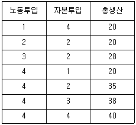
- 규모의 경제
- 규모수익 불변
- 노동의 한계생산 체감
- 자본의 한계생산 체감
- 노동에 대한 자본의 한계대체율 체감
(정답률: 알수없음)
48. 기업 A의 생산함수는 Q = LK 이다. 노동과 자본의 가격이 각각 1원일 때, 다음 설명으로 옳지 않은 것은? (단, Q는 생산량, L은 노동, K는 자본이다.)
- 규모에 대한 수익이 체증한다.
- 노동의 한계생산은 체감한다.
- 자본의 양이 단기적으로 1로 고정되어 있는 경우 100개를 생산하는데 드는 총비용은 101원이다.
- 자본의 양이 단기적으로 1로 고정되어 있는 경우 단기총평균비용은 생산량이 늘어나면 하락한다.
- 자본의 양이 단기적으로 1로 고정되어 있는 경우 한계비용은 불변이다.
(정답률: 알수없음)
49. 노동과 여가의 선택에 관한 설명으로 옳지 않은 것은? (단, 여가는 정상재이다.)
- 시간당 임금은 여가 한 시간의 기회비용이다.
- 시간당 임금이 상승할 경우, 소득효과만 고려하면 노동공급이 감소한다.
- 시간당 임금에 대해 근로소득세율이 상승할 경우, 노동공급이 항상 감소한다.
- 비근로소득이 증가하는 경우, 노동공급이 항상 감소한다.
- 시간당 임금이 상승할 경우, 대체효과만 고려하면 노동공급이 항상 증가한다.
(정답률: 알수없음)
50. 단위당 동일한 종량세율로 생산자 또는 소비자에게 부과하는 조세에 관한 설명으로 옳지 않은 것은?
- 생산자에게 부과할 때와 소비자에게 부과할 때의 경제적 순손실(deadweight loss)은 같다.
- 조세부담의 귀착(tax incidence)은 조세당국과 생산자 및 소비자 간의 협상능력에 의존한다.
- 수요의 가격탄력성이 클수록 생산자의 조세부담이 커진다.
- 수요의 가격탄력성이 공급의 가격탄력성보다 클수록 생산자의 조세부담분이 커진다.
- 수요의 가격탄력성이 0인 재화에 조세를 부과해도 사회후생은 감소하지 않는다.
(정답률: 알수없음)
51. X재의 가격이 150원이고, Y재의 가격이 100원이다. 소비자 甲의 Y재에 대한 한계효용이 300이고 효용이 극대화된 상태라면, 甲의 X재에 대한 한계효용은? (단, X ＞ 0, Y ＞ 0이다.)
- 150
- 200
- 300
- 450
- 550
(정답률: 알수없음)
52. 두 재화 X재와 Y재를 甲은 각각 50단위씩, 乙은 각각 30단위씩 갖고 있다. 이 상태에서 X재에 대한 Y재의 한계대체율이 甲은 3이고 乙은 2이다. 甲과 乙 사이에 자유로운 거래가 이루어진다면, X재에 대한 Y재의 교환비율은? (단, 甲과 乙은 효용을 극대화한다.)
- 0이다.
- 1 이상 2 미만이다.
- 2 이상 3 이하이다.
- 3보다 크고 4 이하이다.
- 4보다 크다.
(정답률: 알수없음)
53. 수요의 법칙과 공급의 법칙이 성립하는 선풍기 시장에서 선풍기 균형가격의 상승을 유발하는 요인이 아닌 것은? (단, 선풍기는 열등재이다.)
- 대체재인 에어컨 생산기술의 발전으로 좀 더 저렴한 비용으로 에어컨을 생산할 수 있게 되었다.
- 대체재인 에어컨 가격이 상승했다.
- 여름 날씨가 무척 더워진다는 예보가 있다.
- 선풍기 물품세가 인상되었다.
- 최근 불황으로 인해 소득이 하락하였다.
(정답률: 알수없음)
54. 동전을 던져 앞면이 나오면 9,000원을 따고 뒷면이 나오면 10,000원을 잃는 도박이 있다. 甲은 위험기피자, 乙은 위험애호자, 丙은 위험중립자인 경우 다음 설명으로 옳은 것은?
- 甲의 도박에의 참여 여부는 위험 기피도에 따라 결정될 것이다.
- 도박에 참여하는 대가로 500원을 준다 해도, 甲은 도박에 참여하지 않을 것이다.
- 丙은 이 도박에 반드시 참여할 것이다.
- 乙은 이 도박에 반드시 참여할 것이다.
- 앞면이 나올 때 따는 금액을 1,000원 올려 10,000원으로 하고, 뒷면이 나올 때 잃는 금액을 1,000원 내려 9,000원으로 하면 甲, 乙, 丙 모두 이 도박에 반드시 참여할 것이다.
(정답률: 알수없음)
55. 甲과 乙 두 사람이 사는 사회에서 甲의 소득을 X, 乙의 소득을 Y라 표시하고, 이들의 소득 분포는 (X, Y)의 형태로 표시한다. 소득 분포 상태를 평가하는 세 가지 원칙은 아래와 같다. 다음 설명으로 옳지 않은 것은?
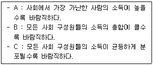
- 소득분포 (3, 2)와 (5, 1)을 비교할 때, 원칙 A에 따르면 (3, 2)가 더 바람직하다.
- 소득분포 (3, 2)와 (4, 2)를 비교할 때, 원칙 B에 따르면 (4, 2)가 더 바람직하다.
- 소득분포 (1, 1)과 (4, 1)을 비교할 때, 원칙 C에 따르면 (1, 1)이 더 바람직하다.
- 소득분포 (3, 3)과 (2, 3)을 비교할 때, 위 세 가지 원칙 모두 (3, 3)을 더 바람직하다고 판단한다.
- 소득분포 (2, 3)과 (7, 3)을 비교할 때, 위 세 가지 원칙 중 (7, 3)이 명백히 더 바람직하다고 판단하는 원칙은 B 뿐이다.
(정답률: 알수없음)
56. 외부성에 관한 설명으로 옳은 것을 모두 고른 것은?
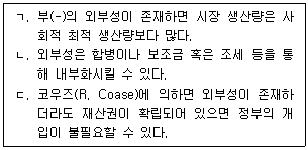
- ㄱ
- ㄱ, ㄴ
- ㄴ, ㄷ
- ㄱ, ㄷ
- ㄱ, ㄴ, ㄷ
(정답률: 알수없음)
57. 한 시장에 두 기업 A, B가 존재한다. 각 기업은 두 가지 생산 전략 L, H 중 하나를 선택할 수 있다. 두 기업의 생산 전략 선택에 따른 보수는 다음 표와 같다. (단, 표에서 각 셀 좌 하단의 숫자는 기업 A의 보수를, 우 상단의 숫자는 기업 B의 보수를 나타낸다.)
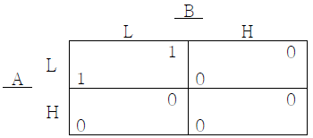
다음 설명 중 옳은 것을 모두 고른 것은?
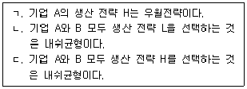
- ㄱ
- ㄴ
- ㄷ
- ㄱ, ㄴ
- ㄴ, ㄷ
(정답률: 알수없음)
58. 효용극대화를 추구하는 소비자 甲의 효용함수는 U(x, y) = min{x, y} 이다. 甲의 수요에 관한 설명으로 옳은 것은? (단, 甲은 X재와 Y재만 소비하고, x는 X재 소비량, y는 Y재 소비량을 나타낸다.)
- 수요의 가격탄력성이 0이다.
- 수요의 가격탄력성이 1이다.
- 수요의 교차탄력성이 0이다.
- 수요의 교차탄력성이 -1이다.
- 수요의 소득탄력성이 1이다.
(정답률: 알수없음)
59. 국내물가가 4% 상승하고 외국물가가 6% 상승했으며 명목환율이 10% 하락한 경우에 실질환율의 하락 정도는? (단, 명목환율은 외국화폐 단위당 자국화폐의 교환비율이다.)
- 4%
- 6%
- 8%
- 10%
- 12%
(정답률: 알수없음)
60. A국은 자본이 상대적으로 풍부하고 B국은 노동이 상대적으로 풍부하다. 양국 간의 상품이동이 완전히 자유로워지고 양 국가가 부분 특화하는 경우, 헥셔-올린(Heckscher-Ohlin)모형과 스톨퍼-새뮤엘슨(Stolper-Samuelson)정리에서의 결과와 부합하는 것을 모두 고른 것은?
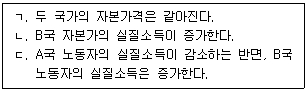
- ㄱ
- ㄱ, ㄴ
- ㄱ, ㄷ
- ㄴ, ㄷ
- ㄱ, ㄴ, ㄷ
(정답률: 알수없음)
61. 개방경제의 국민소득계정에 관한 설명으로 옳은 것을 모두 고른 것은?
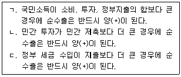
- ㄱ
- ㄴ
- ㄷ
- ㄱ, ㄴ
- ㄴ, ㄷ
(정답률: 알수없음)
62. 국제거래 중 우리나라의 경상수지 흑자를 증가시키는 것은?
- 외국인이 우리나라 기업의 주식을 매입하였다.
- 우리나라 학생의 해외 유학이 증가하였다.
- 미국 기업이 우리나라에 자동차 공장을 건설하였다.
- 우리나라 기업이 중국 기업으로부터 특허료를 지급받았다.
- 우리나라 기업이 외국인에게 주식투자에 대한 배당금을 지급하였다.
(정답률: 알수없음)
63. 총수요-총공급 모형에서 총수요곡선을 이동시키는 요인으로 옳지 않은 것은?
- 원유 등 주요 원자재 가격의 하락
- 가계의 신용카드 사용액에 대한 소득공제 축소
- 신용카드사기 증가로 현금사용 증가
- 가계의 미래소득에 대한 낙관적인 전망
- 유럽의 재정위기로 인한 유로지역 수출 감소
(정답률: 알수없음)
64. 폐쇄경제 IS-LM 모형과 관련된 설명으로 옳은 것은? (단, IS 곡선은 우하향, LM 곡선은 우상향한다.)
- IS 곡선과 LM 곡선에서 총공급 곡선이 도출된다.
- 정부지출의 구축효과는 발생하지 않는다.
- 현재 경제상태가 IS 곡선의 왼쪽, LM 곡선의 오른쪽에 있다면 상품시장은 초과공급, 화폐시장은 초과수요 상태이다.
- 피구효과(Pigou effect)에 의하면 물가수준이 하락할 때 IS 곡선이 우측으로 이동하여 국민소득이 증가한다.
- IS-LM 모형에서 물가수준은 내생변수이다.
(정답률: 알수없음)
65. 고전학파의 화폐수량설에 따를 때, 통화량이 증가하는 경우 다음 설명 중 옳은 것은?
- 화폐유통속도가 감소한다.
- 화폐유통속도가 증가한다.
- 물가가 상승한다.
- 물가가 하락한다.
- 명목 GDP는 불변이다.
(정답률: 알수없음)
66. 명목 GDP(국내총생산)와 명목 GNI(국민총소득)에 관한 설명으로 옳은 것을 모두 고른 것은?
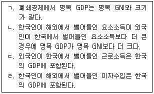
- ㄱ, ㄴ
- ㄱ, ㄷ
- ㄴ, ㄷ
- ㄴ, ㄹ
- ㄷ, ㄹ
(정답률: 알수없음)
67. 경제 내에 생산가능인구(working age population)가 5천만 명, 실업자가 5백만 명, 그리고 취업자가 2천만 명으로 파악되었다. 이 경제의 경제활동참가율과 고용률은?
- 50%, 40%
- 50%, 80%
- 40%, 40%
- 40%, 60%
- 40%, 80%
(정답률: 알수없음)
68. 인플레이션 조세(inflation tax)에 관한 설명으로 옳은 것은?
- 물가가 상승함에 따라 납세자들이 더 높은 세율등급을 적용받아 납부하는 소득세로 정의된다.
- 물가가 상승함에 따라 경제주체가 보유하고 있는 통화의 실질가치가 상승할 때 발생한다.
- 세율이 인상됨에 따라 인플레이션율이 상승하는 것을 의미한다.
- 정부가 정부채권을 시중금융기관으로부터 매입함으로써 발생한 이자율 하락으로 인한 금융자산의 가격하락을 의미한다.
- 정부가 통화량을 증가시켜 재정자금을 조달할 때 발생한다.
(정답률: 알수없음)
69. 다음의 폐쇄경제 모형에서 생산물시장과 화폐시장을 동시에 균형시키는 물가수준은? (단, Y는 국민소득, C는 소비, I는 투자, G는 정부지출, r은 이자율, Md는 명목화폐수요, Ms는 명목화폐공급, P는 물가수준이다.)
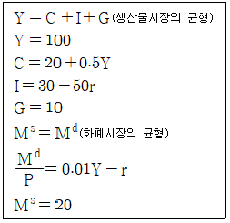
- 15
- 25
- 50
- 75
- 100
(정답률: 알수없음)
70. 실물경기변동이론(real business cycle theory)에 관한 설명으로 옳지 않은 것은?
- 경기변동의 요인으로 기술 충격의 중요성을 강조한다.
- 노동시장은 항상 균형을 이룬다.
- 경기변동은 시간에 따른 균형의 변화로 나타난다.
- 불경기에도 생산의 효율성은 달성된다.
- 생산성은 경기역행적(counter-cyclical)이다.
(정답률: 알수없음)
71. A국의 연간 실질 GDP 변화율과 실업률의 변화가 다음과 같은 관계에 있다. 이에 관한 설명으로 옳은 것은?
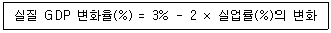
- 자연실업률은 3%이다.
- 실업률이 5%에서 6%로 상승하면 실질 GDP는 2% 감소한다.
- 실질 GDP가 1% 하락하면 실업률은 5%에서 5.5%로 상승한다.
- 물가가 상승하면 단기적으로 실질 GDP가 감소한다.
- 실업률이 변화하지 않을 경우 실질 GDP는 3% 증가한다.
(정답률: 알수없음)
72. 소비이론에 관한 설명으로 옳은 것은?
- 피셔(I. Fisher)의 기간 간 소비선택이론에 따르면 차입제약이 없는 경우 이자율은 현재소비에 영향을 줄 수 없다.
- 항상소득가설(permanent income hypothesis)은 소비자들이 유동성제약에 처해있다고 전제한다.
- 생애주기가설(life cycle hypothesis)은 현재소비는 현재소득에만 의존한다고 전제한다.
- 항상소득가설에 따르면 평균소비성향은 현재소득에 대한 항상소득의 비율에 의존한다.
- 케인즈 소비함수에서 소득이 증가할 때 평균소비성향은 항상 일정하다.
(정답률: 알수없음)
73. 솔로우(R. Solow) 성장모형에서 일인당 생산함수는 y = k1/2, 저축률은 12%, 인구증가율은 1%, 자본의 감가상각률은 2%이다. 다음 설명 중 옳은 것을 모두 고른 것은? (단, y는 일인당 생산량, k는 일인당 자본량이다.)
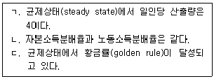
- ㄱ
- ㄴ
- ㄱ, ㄴ
- ㄴ, ㄷ
- ㄱ, ㄴ, ㄷ
(정답률: 알수없음)
74. 다음 그림은 A국의 인플레이션율과 실업률 사이의 단기적 상충관계를 나타내는 필립스곡선이다. 이 관계에 근거하여 단기적으로 실업률을 낮추기 위한 정부의 정책 방향으로 옳은 것은? (단, 세로축은 인플레이션율, 가로축은 실업률이고, 단위는 %이다.)
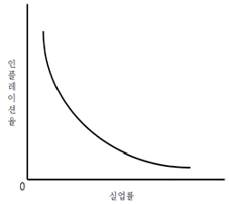
- 정부지출을 감소시킨다.
- 소득세를 인하한다.
- 통화량을 감소시킨다.
- 기준금리를 인상한다.
- 법인세를 인상한다.
(정답률: 알수없음)
75. 정기예금의 실질 수익률은 실질 이자율이다. 현금보유의 실질 수익률은?
- 실질 이자율
- 실질 이자율의 마이너스 값
- 인플레이션율
- 인플레이션율의 마이너스 값
- 실질 이자율과 인플레이션율의 합
(정답률: 알수없음)
76. 우리나라에서 산정되는 물가지수에 관한 설명으로 옳은 것은?
- 소비자물가지수 산정에 포함되는 재화와 용역은 해마다 달라진다.
- GDP 디플레이터 산정에는 파셰 지수(Paasche Index) 산식을 사용한다.
- 소비자물가지수 산정에는 국내에서 생산되는 재화와 용역만 포함된다.
- 생산자물가지수 산정에 포함되는 재화와 용역은 해마다 달라진다.
- GDP 디플레이터 산정에 포함되는 재화와 용역은 5년 마다 달라진다.
(정답률: 알수없음)
77. 중앙은행은 아래와 같은 테일러 준칙(Taylor rule)에 따라 명목이자율을 조정한다. 이에 관한 설명으로 옳지 않은 것은? (단, i는 명목이자율, π는 인플레이션율, π*는 목표 인플레이션율, Y*는 잠재 GDP, Y는 실제 GDP, (Y*-Y)/Y* 는 총생산갭이다.)
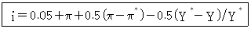
- 목표 인플레이션율이 낮아지면 중앙은행은 명목이 자율을 인상한다.
- 실제 GDP가 잠재 GDP보다 더 큰 경우에 중앙은 행은 명목이자율을 인상한다.
- 총생산 갭은 0이고 인플레이션율이 3%에서 4%로 상승하는 경우에, 중앙은행은 명목이자율을 0.5% 포인트(%p) 인상한다.
- 인플레이션율이 목표치와 같고 실제 GDP가 잠재 GDP와 같다면 실질이자율은 5%가 된다.
- 인플레이션율은 목표치와 같고 총생산 갭이 0%에서 1%로 상승하는 경우에, 중앙은행은 명목이자율을 0.5%포인트(%p) 인하한다.
(정답률: 알수없음)
78. 중앙은행의 통화량 조절 방법에 관한 설명으로 옳은 것은?
- 법정지급준비율을 인상하면 시중은행이 예금액 중에서 대출할 수 있는 금액이 증가한다.
- 중앙은행이 국채를 시중은행 A에 매도하면 시중은행 A의 지급준비금은 증가한다.
- 법정지급준비율을 인하하면 예금통화승수는 감소한다.
- 재할인율을 인상하면 통화량이 증가한다.
- 중앙은행이 민간인들이 보유하고 있는 국채를 매입하면 통화량은 증가한다.
(정답률: 알수없음)
79. 마찰적 실업의 원인을 모두 고른 것은?
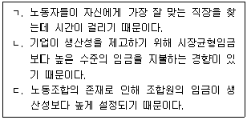
- ㄱ
- ㄴ
- ㄷ
- ㄱ, ㄴ
- ㄴ, ㄷ
(정답률: 알수없음)
80. 합리적 경제주체들이 인플레이션율을 6%로 예상하고 다음과 같은 경제행위를 하였다. 실제 인플레이션율이 3%일 때 손해를 보는 경제주체를 모두 고른 것은?
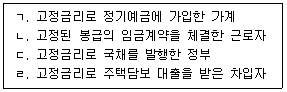
- ㄱ, ㄴ
- ㄴ, ㄷ
- ㄷ, ㄹ
- ㄱ, ㄷ
- ㄴ, ㄹ
(정답률: 알수없음)